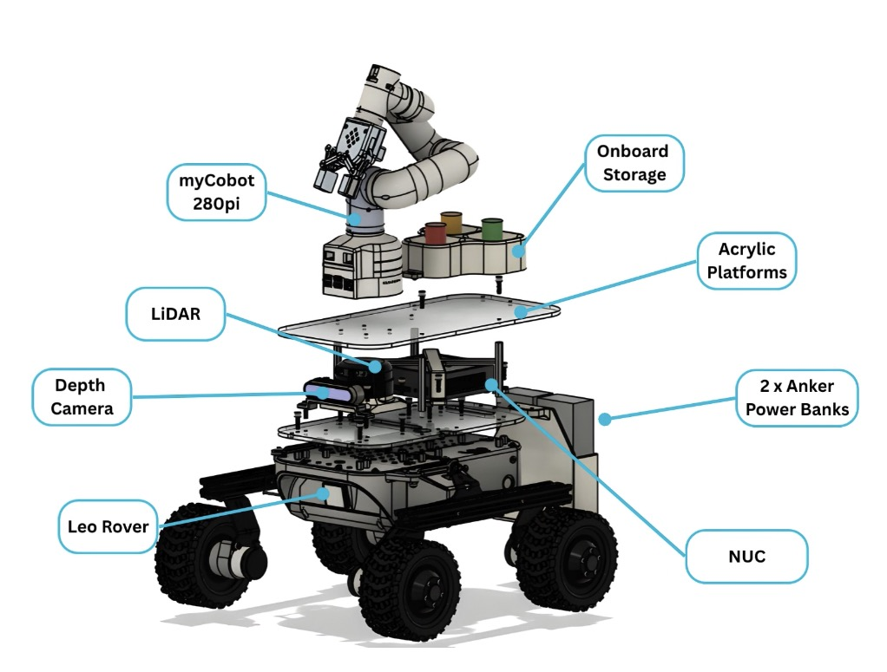
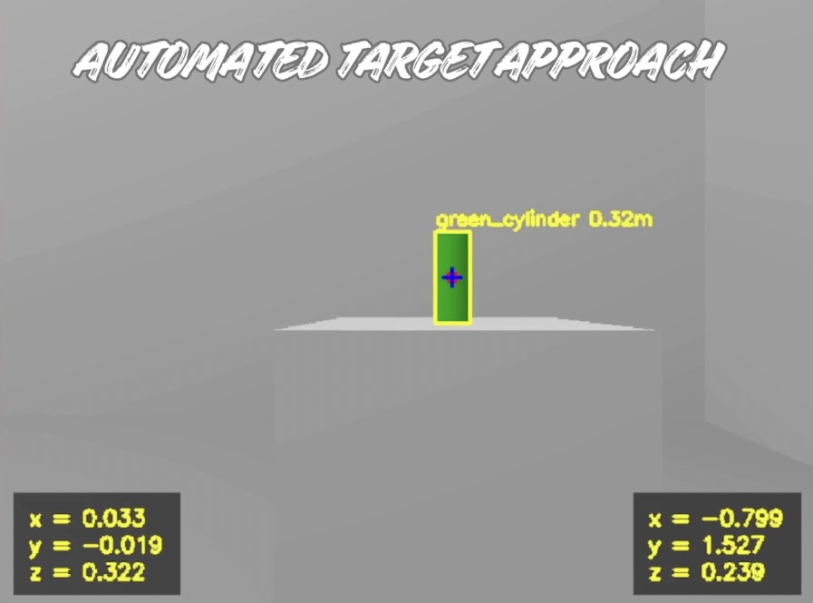
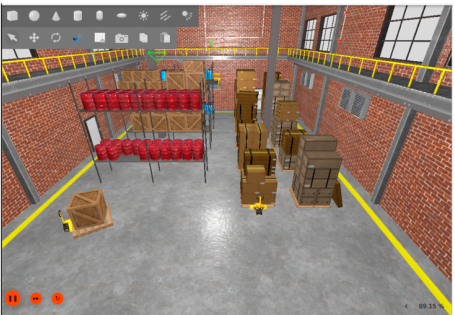
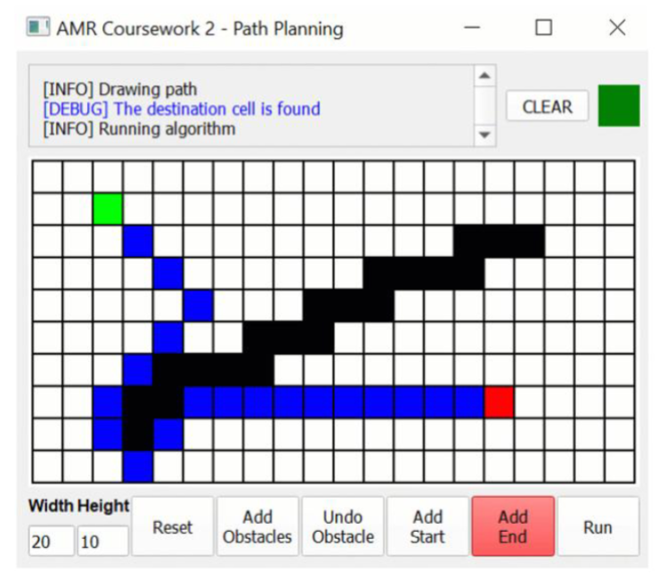
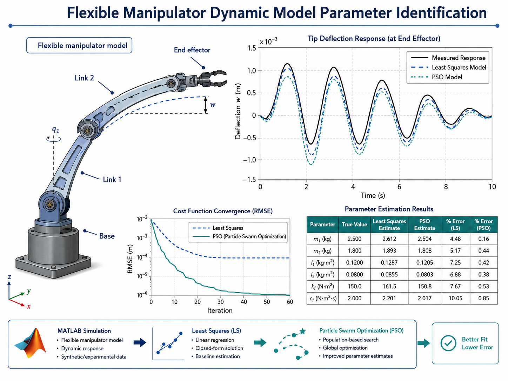
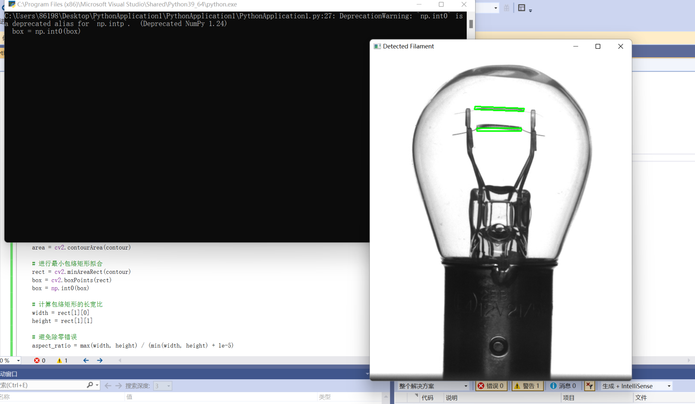

Selected Projects
This section has been updated to include project goals, my contribution, technical approach, outcomes, and supporting project links where available.
Autonomous Mobile Manipulator Robot System
University of Manchester Team Project | 2025–2026
Goal: The goal of this project was to design and integrate an autonomous mobile manipulation system capable of perceiving target objects, navigating within an environment, and providing object position information for downstream robotic manipulation.
My Contribution: My main contribution focused on ROS 2 software integration, perception, and modular system communication. I helped organise the communication structure between perception, navigation, and manipulation modules, and worked on RGB-D-based object detection and 3D localisation.
Technical Approach: The system combined a Leo Rover mobile platform, Intel NUC, RPLiDAR, Intel RealSense RGB-D camera, and a MyCobot robotic arm. ROS 2 topics and TF were used to connect sensor data, perception outputs, navigation information, and manipulation-related target information.
Outcome: This project improved my understanding of complete robotic systems, especially how perception, navigation, manipulation, hardware, and ROS 2 software architecture must be integrated and debugged together.

Autonomous mobile manipulation platform integrating mobile base, sensors, computing hardware and manipulator.
RGB-D Object Detection and 3D Localisation for Robotic Manipulation
ROS 2 / Intel RealSense / Object Detection | 2025–2026
Goal: The goal was to develop a perception module that could detect target objects and estimate their 3D positions for robotic manipulation tasks.
My Contribution: I worked on the RGB-D perception pipeline, including object detection, depth processing, 3D position estimation, and ROS 2 message publication. I also helped connect the perception output with the wider robot system.
Technical Approach: The system used colour and depth images from an Intel RealSense camera. After detecting target objects in the image, depth information around the object centre was sampled and filtered. The 2D image point was then projected into a 3D point using camera intrinsics and transformed into the required robot frame using TF.
Outcome: This project strengthened my understanding of sensor noise, coordinate frames, depth-based localisation, and the importance of reliable perception outputs in robot manipulation.

Object detection and depth-based localisation result for robotic manipulation.
ROS 2 Drone Control and Gazebo Simulation System
ROS 2 / Gazebo / TF2 / ros_gz_bridge | 2025
Goal: The goal was to build a simulated drone control system that could receive target poses, estimate its current pose, and move towards a desired position using velocity commands.
My Contribution: I implemented the ROS 2 control pipeline, including pose acquisition through TF2, velocity command publication, and action-based target pose control. I also worked on bridging Gazebo simulation topics with ROS 2.
Technical Approach: Gazebo was used for simulation and ROS 2 was used for control. The drone pose was obtained through TF2, while velocity commands were published to a bridged command velocity topic. An action server received target poses and provided feedback based on the latest pose estimate.
Outcome: This project improved my practical understanding of ROS 2-Gazebo integration, action servers, TF-based pose tracking, velocity control, and simulation-based robot software testing.

Drone control simulation in Gazebo using ROS 2, TF2 and velocity command control.
UAV Feedback Control and Stable Hovering
Feedback Control / Simulation / Controller Tuning | 2026
Goal: The goal was to design and tune feedback controllers for a UAV in a 3D simulation environment, enabling the vehicle to reach a target position and maintain stable hovering under disturbance.
My Contribution: I worked on controller tuning and performance analysis. I tested different control gains, observed system responses, and adjusted parameters to balance fast target acquisition with stable behaviour.
Technical Approach: The controller was tuned using an inner-to-outer loop approach. The inner attitude-related loop was stabilised first, followed by the outer position loop. Different gains were compared based on response speed, overshoot, oscillation, and stability.
Outcome: This project helped me understand how feedback gain tuning affects stability, oscillation, response speed, robustness, and engineering trade-offs.

Controller tuning and response analysis for stable UAV hovering.
Mobile Robot Path Planning Using A*
Python / Path Planning / Grid Map | 2026
Goal: The goal was to implement the A* path planning algorithm for a mobile robot in a grid-based environment, allowing the robot to find an efficient collision-free path from a start point to a goal point.
My Contribution: I implemented the A* algorithm in Python, including grid map representation, obstacle handling, cost calculation, heuristic design, and path visualisation.
Technical Approach: The planner used a four-connected motion model and a Euclidean distance heuristic. The algorithm evaluated neighbouring cells based on accumulated path cost and estimated distance to the goal, then reconstructed the final path after the goal was reached.
Outcome: This project strengthened my understanding of search algorithms, heuristic functions, and classical planning methods used in autonomous mobile robots.

A* path planning result showing obstacle avoidance and final route generation.
Flexible Manipulator Dynamic Model Parameter Identification
MATLAB / Modelling / Least Squares / Particle Swarm Optimisation | 2023
Goal: The goal was to identify key parameters of a flexible manipulator dynamic model and evaluate the accuracy of the identified model through simulation.
My Contribution: I used MATLAB for dynamic modelling, simulation, parameter identification, and result analysis. I applied least squares and particle swarm optimisation methods to estimate important model parameters.
Technical Approach: The project involved building a mathematical model, preparing simulation data, estimating model parameters, and evaluating the difference between model predictions and reference data.
Outcome: This project developed my understanding of robot dynamics, modelling, optimisation, and simulation-based engineering analysis.

Dynamic modelling and parameter identification result for a flexible manipulator.
Earlier Computer Vision and AI Projects
OpenCV / MediaPipe / Open3D / Python
Before my MSc Robotics study, I completed several smaller computer vision and AI projects, including OpenCV-based filament detection, object dimension measurement, hand gesture recognition using MediaPipe, and RGB-D point cloud reconstruction using Open3D. These projects helped me build a foundation in image processing, feature detection, real-time visualisation, and 3D perception, which later supported my robotics perception work.

Example of earlier OpenCV-based computer vision work.